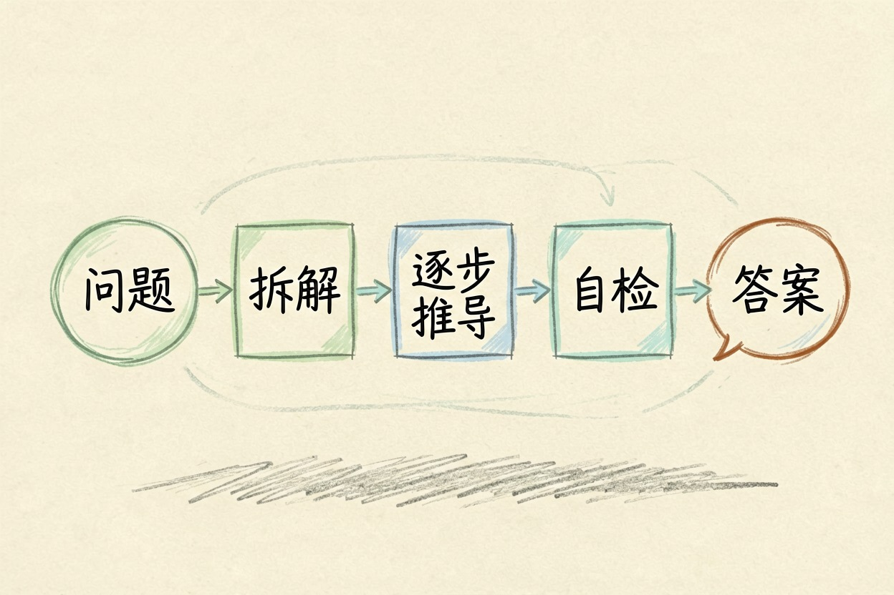
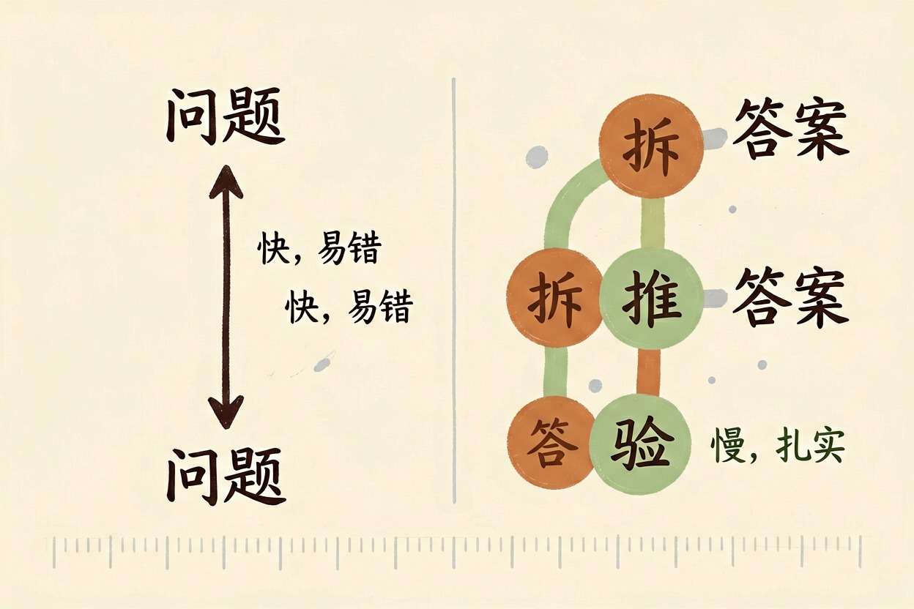
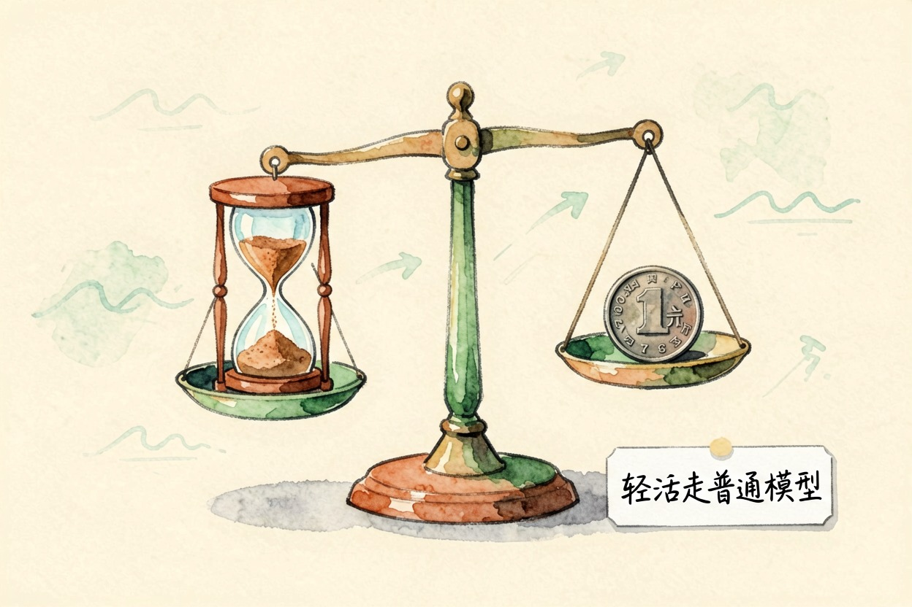

推理模型是什么：会一步步想再答的 AI — Learntide
普通模型像脱口而出的快嘴，推理模型像先在草稿纸上推演一遍再开口的人。
推理模型是什么：先想清楚再开口

推理模型是什么？一句话，它拿到题目不急着开口，先在内部把问题拆成几步，自己推一遍，确认没岔子才给答案。你看到的可能只有三行结论，背后走过的步骤也许有几十步。它把「思考」这个过程显式拉长了。
它跟普通模型同属一类系统，底层都是 大模型是什么 讲的那套东西，只是干活的流程被改了。
它和普通模型差在哪

差别不在知识量，在流程。两者读过的东西可能差不多，处理方式完全不同。
普通模型：问题 → 答案 （一步到位，快，转弯处易翻车）
推理模型：问题 → 拆解 → 逐步推导 → 自检 → 答案 （慢，但结论更扎实）多出来的那几步，作用是自己抓自己的错。第三步算错了，第五步往往对不上，模型有机会退回去改。普通模型没有这个环节。一路顺着往下写，错了也接着往下错。
这也解释了一个常见现象。同一道题，普通模型答得斩钉截铁却是错的，推理模型磨磨蹭蹭却对了。流畅和正确，从来是两回事。
还有一点值得说。推理模型的思考过程，多数产品只给你看摘要，甚至完全隐藏。你看不到全过程，也就没法逐步核对。遇到重要结论，还是得自己验一遍。
什么题才值得交给它
判断标准很简单：这道题需要分步吗？
需要分步的，交给它。多条件的数学应用题，一段有隐蔽错误的代码。涉及好几层假设的方案比较，要核对前后矛盾的长文档。这些都是它的主场。如果还要调用工具、自己决定下一步做什么，那已经接近 ai智能体是什么 的范畴。
不需要分步的，别浪费。写个标题，改个措辞，翻一小段话，润色一封邮件，普通模型又快又够用。你等它想三十秒，换来的可能是一模一样的结果。
还有一类容易被忽略。题目本身信息不全的时候，它也救不了你。它会一本正经地把缺的条件自己补上，再基于这个猜测往下推。把条件给全，比换模型有用得多。
慢和贵是它的代价

多想几步，就是多烧 token 是什么意思 里说的那种计费单位，也多等几秒到几十秒。日常琐事这么用，账面上不划算，体验上也着急。
还有一种隐性成本：等待打断节奏。你在写东西的间隙问一句，等半分钟，思路就散了。快，本身也是一种价值。
更实际的做法是分流。轻活走普通模型，重活才切推理模型。多数平台已经支持手动切换。用之前先想一秒：这题值不值得它慢慢想。
别把所有题都丢给它
推理模型不是更聪明的通用替代品，它是一件专用工具。工具用对场合才叫好用。别看到「推理」两个字就默认它样样更强，简单任务上它的优势常常为零，还白白多花时间。
也别指望它永远不出错。它只是把犯错的概率压低了一截，长链条里照样会有环节掉链子。真正决定结果的，还是推理模型是什么、以及你这道题到底需不需要它多想那几步。
本文信息核对于 2026-08-08。AI 产品的价格、免费额度与功能变动频繁，实际以各工具官网当前说明为准。